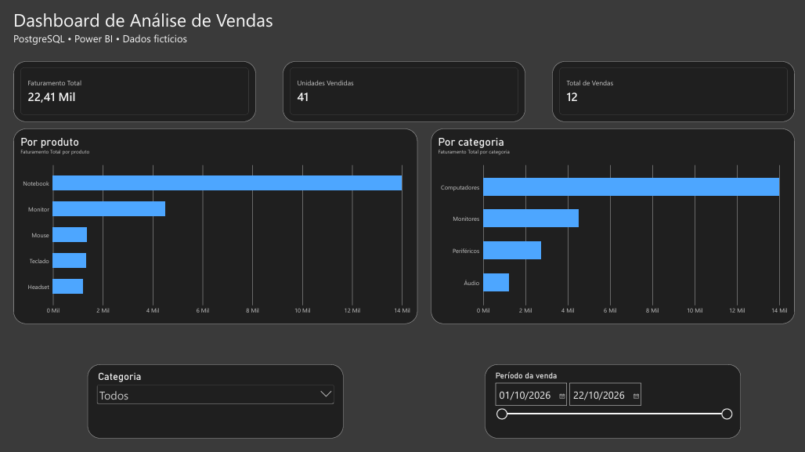

DASHBOARD / POWER BIPROJETO 01 · ANÁLISE DE DADOS
Análise de Vendas
Projeto de análise comercial com banco de dados PostgreSQL, consultas SQL, exploração de dados em Python e visualização de indicadores no Power BI.
R$ 22.410Faturamento
41Unidades
12Vendas
Indicadores de dados fictícios usados para demonstração.
Ver repositórios no GitHub >
>